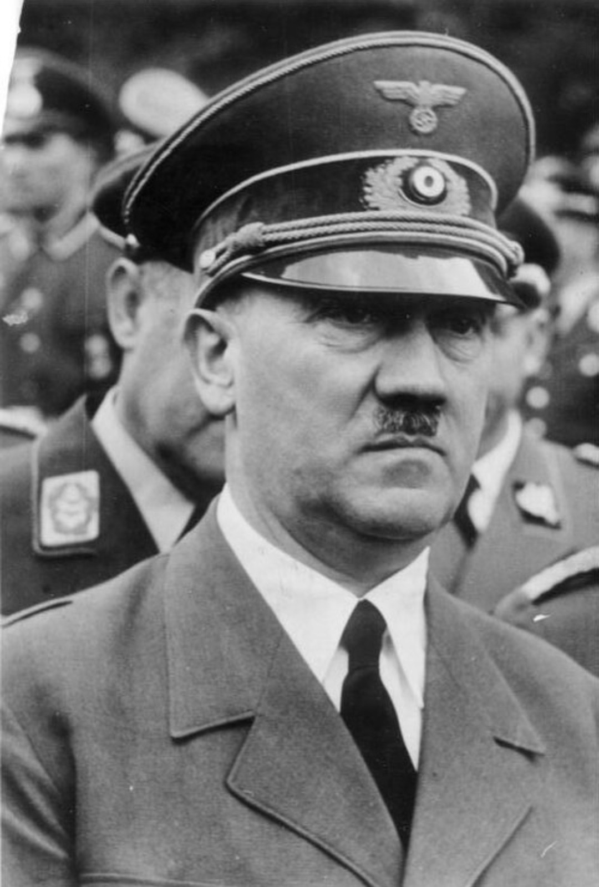

Le nazisme est une idéologie totalitaire fondée sur le racisme biologique, l’antisémitisme, le nationalisme extrême et la violence politique. Porté par le parti nazi (NSDAP) et son chef Adolf Hitler, il transforme l’Allemagne entre 1933 et 1945 en une dictature brutale responsable de la Seconde Guerre mondiale et de crimes de masse, dont la Shoah.
Le régime nazi impose un contrôle total sur la société, élimine les opposants, embrigade la jeunesse, militarise le pays et mène une politique d’expansion agressive qui plonge l’Europe dans la guerre.
Après la défaite de 1918, l’Allemagne est affaiblie : humiliation du traité de Versailles, perte de territoires, réparations financières, instabilité politique. La République de Weimar peine à s’imposer et les extrémismes gagnent du terrain.
La crise économique mondiale de 1929 provoque une explosion du chômage et une misère sociale qui favorisent les discours radicaux. Le NSDAP exploite ce climat de désespoir en promettant ordre, prospérité et grandeur nationale.
Dans les années 1920, le parti nazi reste marginal. Mais la crise de 1929 change tout : les classes moyennes s’effondrent, les institutions sont discréditées et la population cherche un sauveur. Hitler se présente comme l’homme providentiel capable de restaurer la puissance allemande.
Grâce à une propagande efficace, à la violence des SA et à un discours simpliste mais séduisant, le NSDAP devient le premier parti du pays en 1932.
Le 30 janvier 1933, Hitler est nommé chancelier. En quelques mois, il démantèle la démocratie : interdiction des partis politiques, contrôle de la presse, arrestations d’opposants, création d’un État policier.
L’incendie du Reichstag sert de prétexte pour suspendre les libertés fondamentales et instaurer un régime de terreur. Le premier camp de concentration, Dachau, ouvre dès 1933.
Le nazisme contrôle tous les aspects de la société : l’État, la police, la justice, l’école, la culture et les médias. La propagande glorifie Hitler et diffuse l’idéologie raciste du régime.
La Gestapo et les SS surveillent la population, répriment toute opposition et organisent la persécution des groupes considérés comme « ennemis » : Juifs, communistes, opposants politiques, handicapés, homosexuels, Roms.
Le nazisme repose sur plusieurs piliers idéologiques :
La propagande utilise le cinéma, la radio, les affiches, les journaux, les rassemblements et l’éducation pour façonner les esprits dès l’enfance.
Dès 1933, les Juifs sont exclus de la vie publique. Les lois de Nuremberg (1935) retirent aux Juifs leurs droits civiques et organisent leur ségrégation.
La persécution s’intensifie avec les violences, les déportations et la création des premiers camps de concentration. La « Nuit de Cristal » (1938) marque une étape majeure dans la brutalité du régime.
Pendant la guerre, cette politique conduit à la « Solution finale » : l’extermination systématique de millions de Juifs d’Europe.
Le nazisme vise à créer un « espace vital » pour le peuple allemand. Le régime multiplie les agressions : remilitarisation de la Rhénanie, annexion de l’Autriche, démantèlement de la Tchécoslovaquie.
L’invasion de la Pologne en septembre 1939 déclenche la Seconde Guerre mondiale. L’Allemagne conquiert une grande partie de l’Europe, imposant une occupation brutale et des crimes de masse.
Le nazisme est responsable de crimes massifs : génocide des Juifs (Shoah), extermination des Roms, persécution des opposants, massacres en Europe de l’Est, travail forcé de millions de civils, expériences médicales sur des prisonniers.
Ces crimes sont parmi les plus documentés de l’histoire moderne.
À partir de 1943, l’Allemagne recule sur tous les fronts. Berlin tombe en avril 1945. Hitler se suicide le 30 avril. La capitulation allemande est signée le 8 mai 1945.
La découverte des camps révèle l’ampleur des crimes nazis.
Le nazisme est étudié comme l’un des régimes les plus criminels du XXe siècle. Il montre comment une démocratie peut basculer dans la dictature, comment la propagande manipule les masses et comment le racisme d’État peut mener au génocide.
Sa mémoire est essentielle pour prévenir les dérives autoritaires et défendre les droits humains.